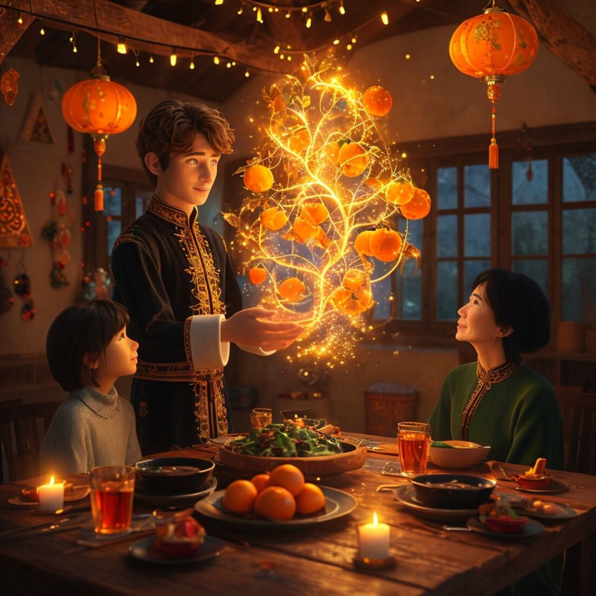
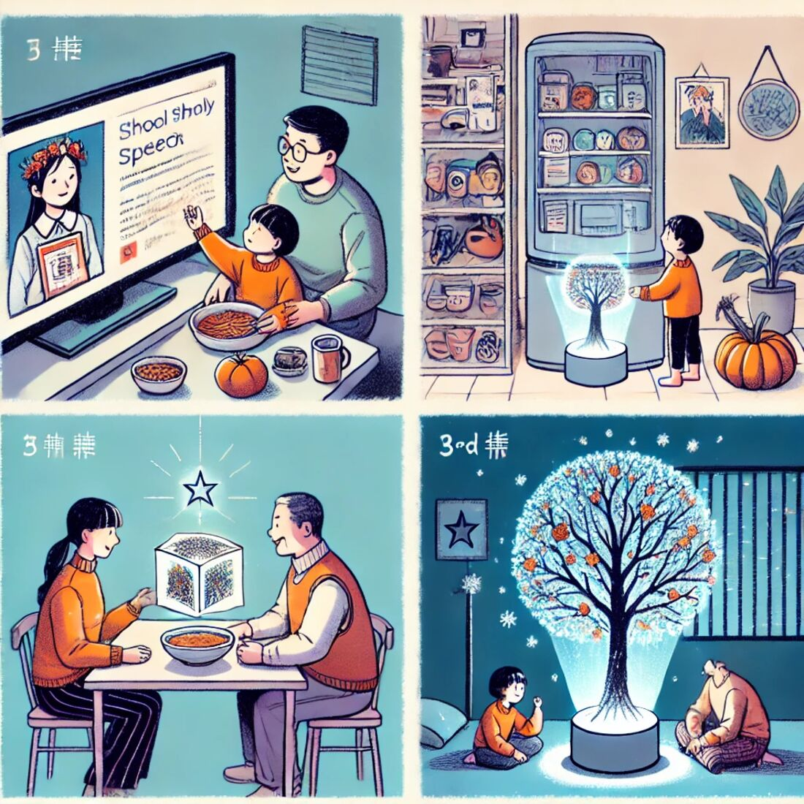
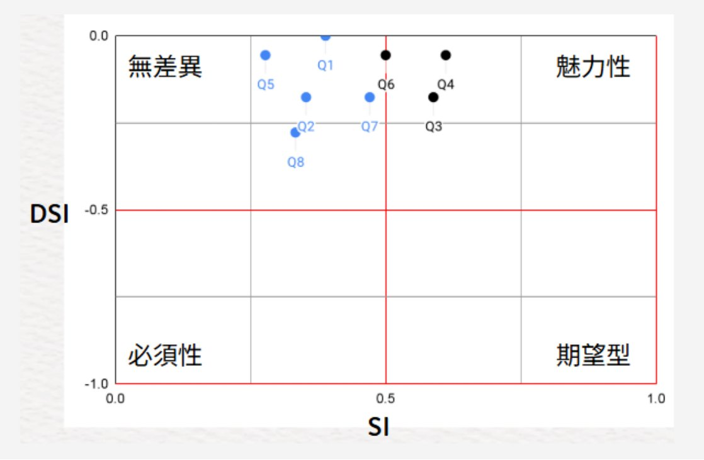
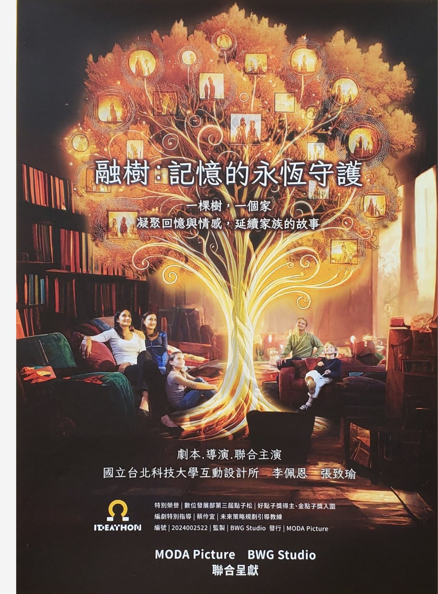
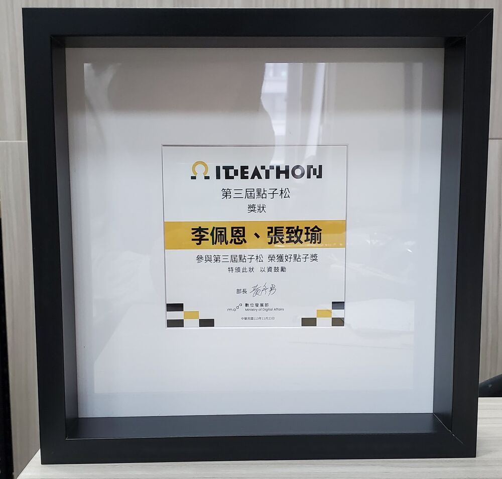
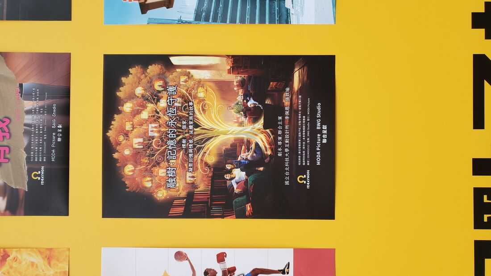

融樹：記憶的永恆守護Rong Tree: Where Memories Take Root 為 2040 年的多元家庭設計一棵 AI 家族樹An AI family tree for the plural families of 2040
當核心家庭持續消失、家的形狀越來越多元，「家庭情感支持」這個不變的價值該由什麼承載？我們的答案是一棵樹——從 3,000 多組提案中走進前 30 強，拿下好點子獎。As nuclear families shrink and homes take ever more plural shapes, what carries the unchanging value of family emotional support? Our answer: a tree — Top 30 of 3,000+ entries and a Good Idea Award winner.
3,000+ 組前 30 強・好點子獎・金點子獎入圍Top 30 of 3,000+ · Good Idea Award · Golden Idea finalist
我的角色My Role
提案・使用者研究・設計（共同主導）Proposal · UX research · Design (co-lead)
⏱ 90 秒版⏱ 90-Second Version
角色Role：提案・使用者研究・設計（共同主導）Proposal · UX research · Design (co-lead)
挑戰Challenge：2040 年多元家庭情境下，「家庭情感支持」這個不變的價值該由什麼承載In the plural-family scenarios of 2040, what carries the unchanging value of family emotional support?
我做了什麼What I did：從家庭結構數據推導未來情境、共同提案「融樹」概念、兩輪 KANO 與訪談翻案 3 項功能設計、撰寫並演出決選簡報Derived the 2040 scenario from household-structure data, co-proposed the "Rong Tree" concept, overturned 3 features through two rounds of KANO and interviews, wrote and performed the finals pitch
成果Result：3,000+ 組中前 30 強、好點子獎得主、金點子獎入圍Top 30 of 3,000+ entries, Good Idea Award winner, Golden Idea finalist
01從數據開始的未來想像Futures Grounded in Data
點子松要求提案者想像 2040 年的台灣。我們不從科技幻想出發，而是從家庭結構統計開始：24 年間核心家庭減少 15%、單身與夫婦家庭增加 18%——「幾乎少了一整個板橋區的核心家庭」；有偶人口下降的同時，跨國婚姻比例上升。推導出 2040 情境：個人主義浪潮下家庭結構劇變，共同生活家庭、選擇家庭、跨文化與遠距家庭成為常態。The Ideathon asks entrants to imagine Taiwan in 2040. We started not from tech fantasy but from household statistics: over 24 years, nuclear families fell 15% while single and couple-only households rose 18% — "nearly an entire Banqiao District of nuclear families, gone." Marriage rates fell while cross-cultural marriages rose. Our 2040 scenario: family structures transformed by individualism — co-living families, chosen families, cross-cultural and long-distance families become the norm.
核心洞察：社會型態會變，價值觀不會。家庭形式再怎麼多元，「家庭情感支持」仍是無法被其他社會機制取代的需求——文獻指出它一旦失能，對青少年心理、長者健康都有連鎖影響。變動的結構 × 不變的價值＝新產品的機會空間。Core insight: social structures change; values don't. However plural families become, emotional support from family remains irreplaceable — when it fails, research links cascading effects on youth mental health and elder wellbeing. Shifting structures × an unchanging value = the opportunity space.
02概念：一棵會長大的家族樹The Concept: A Family Tree That Grows
初選我們同時提交了兩案（健康預見鏡／融樹），融樹晉級決選。它是一棵放在家中的 AI 全息家族樹：We submitted two ideas in the first round (a health-prediction mirror and Rong Tree); Rong Tree advanced to finals. It's an in-home holographic AI family tree:
回憶積木：家人把回憶拼上樹，樹隨之抽芽生長——每個家庭的樹都長成獨一無二的樣子。Memory blocks: family members pin memories onto the tree, which sprouts and grows — every family's tree becomes unique.
儀式果實：AI 自動分類回憶，年復一年的家庭傳統（每年冬至的祖傳柑橘圓仔湯）凝結成樹上發光的果實——把「儀式感」視覺化。Ritual fruits: AI clusters recurring memories; yearly traditions (the family's winter-solstice tangyuan recipe) crystallize into glowing fruit — ritual made visible.
生物感知的陪伴：樹能感知成員情緒，以柔和的光與葉片顫動回應——安慰但不張揚。Bio-sensing companionship: the tree senses emotions and responds with soft light and trembling leaves — comfort without exposure.
數位種子：家庭重組或成員離家時，樹會結出數位種子，讓回憶與傳統在新家庭延續。Digital seeds: when families restructure or members leave, the tree bears digital seeds that carry memories and traditions into new homes.
個人／家庭雙資料庫：私密傾訴只留在個人庫，家庭樹只呈現本人同意分享的回憶，並可篩選哪些回憶傳承給下一代。Dual privacy databases: private confessions stay personal; the family tree shows only consented memories, with curated inheritance to the next generation.

決選情境：冬至夜，柑橘果實在樹上亮起。The finals scenario: on winter solstice night, the tangerine fruit glows.

情境四格：小榮、方方與欣欣一家與融樹的日常。Scenario comic: daily life of Xiao-Rong's chosen family with the tree.
03研究驗證：讓使用者否決我們的功能Research: Letting Users Veto Our Features
概念不是一次成形的。我們用三種工具反覆驗證：多份問卷（2040 家庭想像、家庭情感凝聚與回憶傳承調查）、兩輪 KANO 模型、與深度訪談。KANO 問卷把八個功能假設攤在 DSI/SI 象限上，結果多數落在「無差異」與「魅力型」之間——這逼我們誠實面對：哪些是我們自嗨、哪些才是使用者要的。The concept wasn't born whole. We validated with three tools: multiple surveys (2040 family imaginaries; family cohesion & memory inheritance), two rounds of the KANO model, and in-depth interviews. Plotting eight feature hypotheses on the DSI/SI quadrants — most landed between "indifferent" and "attractive" — forced honesty about which features were our own excitement versus real user desire.

KANO 分析：八項功能假設的 DSI/SI 分佈。KANO analysis: DSI/SI distribution of eight feature hypotheses.
研究直接改掉的三個設計Three designs the research overturned
原設計Original
訪談發現Finding
修改後Revised
系統偵測情緒後直接告知家人（明示）System detects and broadcasts emotions
「不願意被讀取情緒後發送給別人」——情緒是隱私"I don't want my emotions read and sent to others" — emotion is private
樹可感知但不外傳，僅以葉色變化「暗示」，用「感受」代替「情緒」The tree senses but never broadcasts; leaf colors only hint; "feelings," not "emotions"
AI 在家庭爭吵時播放舊回憶「調解」AI plays old memories to mediate family fights
「太插手感情了，期待它輔助人做不到的事，而不是取代人」"Too intrusive — help with what humans can't do, don't replace them"
刪除調解功能，定位為「守護與記錄者」，互動由人發起Mediation cut; repositioned as guardian-recorder, with human-initiated interaction
樹是中性的回憶載體The tree as a neutral memory container
「植物要有自己的角色與生物痕跡，人才會對它產生情感」"The plant needs its own character and traces of life for people to bond with it"
強化共生設定：會生長、會回應、有生命感的角色Strengthened symbiosis: a growing, responsive, life-like character
04敘事設計：先讓評審口渴Pitch Craft: Make the Judges Thirsty First
決選前我們參加官方的未來策略工作坊與三次導師輔導（8/13、8/20、8/29），把簡報重構為 Attention → Need → Satisfaction 的敘事：先用「少了一整個板橋區」這種有比例尺的數據抓注意力，再讓聽眾感受到情感支持失能的痛（「不渴就不知道水是甜的」），最後才端出融樹。決選簡報採雙人對話式演出——一人講人的行為、一人講樹的回應，把冬至圓仔湯的情境演成一場小劇。我們也預先寫好 Q&A 題庫：跟共享相簿差在哪？為什麼是回憶不是即時通訊？浮空投影以外的技術今天就能做嗎？Before finals we joined the official futures-strategy workshop and three mentor sessions, restructuring the pitch as Attention → Need → Satisfaction: hook with scaled data ("an entire district of nuclear families, gone"), make the audience feel the ache of failing emotional support ("you don't know water is sweet until you're thirsty"), and only then reveal the tree. The finals pitch was a two-person dialogue performance — one voice for the humans, one for the tree — acting out the winter-solstice scenario. We also pre-wrote a Q&A bank: how is this different from a shared album? Why memories, not instant messaging? What's feasible today beyond holography?
好點子獎得主・金點子獎入圍Good Idea Award winner · Golden Idea Award finalist
與 MODA Picture／BWG Studio 合作產出「融樹：記憶的永恆守護」主視覺海報Key-visual poster "Rong Tree: Where Memories Take Root" produced with MODA Picture / BWG Studio

決選主視覺海報The finals key visual


好點子獎獎狀與頒獎現場The award certificate and ceremony venue
06學到的事What I Learned
研究的價值在於它會推翻你。「情緒明示」是我們很喜歡的功能，訪談把它變成了葉色的暗示——被使用者否決的每一次，概念都變得更誠實。Research is valuable because it overrules you. Emotion broadcasting was a feature we loved; interviews turned it into hinting leaf colors. Every user veto made the concept more honest.
價值觀錨定是未來思考最穩的地基。預測科技容易失準，但「社會變、價值不變」的交叉點幾乎不會錯——這個方法後來也影響了我做產品策略的方式。Anchoring on values is the steadiest ground in futures thinking. Tech predictions miss; the intersection of changing structures and unchanging values rarely does. This method later shaped how I do product strategy.
提案是體驗設計。同一個概念，說成規格是平庸的，演成一個冬至夜的故事就有了溫度——敘事不是包裝，是概念的一部分。A pitch is an experience design. The same concept read as specs is mediocre; performed as a winter-solstice story, it has warmth. Narrative isn't packaging — it's part of the concept.